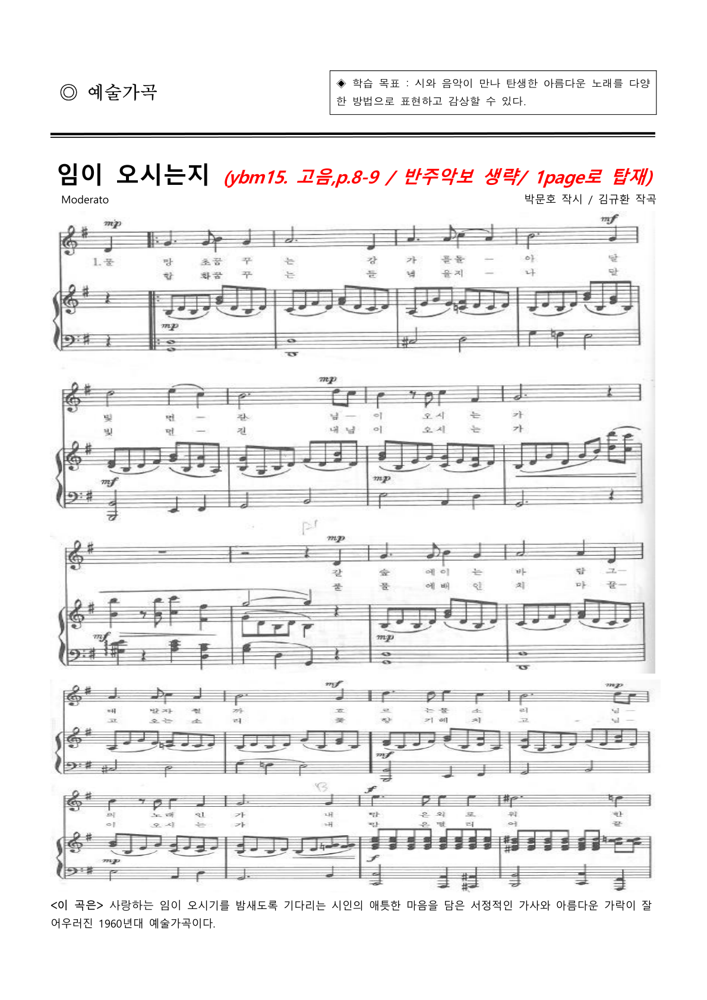

원고 미리보기
p. 1 / 2

3
1 / 2쪽
수정 필요 · 3건
유사도
본문 표현이 참고 교과서와 매우 유사함
p.1 · 본문
겹치는 표현 3곳(서정적인·아름다운·담은) 확인
성취기준
성취기준을 찾지 못함
p.1
성취기준 코드와 문장을 단원 정보에 명시
활동 구성
참고 사진·삽화 없음
p.1
본문 이해를 돕는 사진 또는 삽화 추가
검토 필요 · 5건 전체 펼치기
표현
학습 목표 추천 문구 검토
p.1 · 학습 목표
교육과정 핵심 개념을 더 반영한 대체 문구 확인
검토 필요 항목 4건 더 보기
펼치기
통과 항목 4건
펼치기